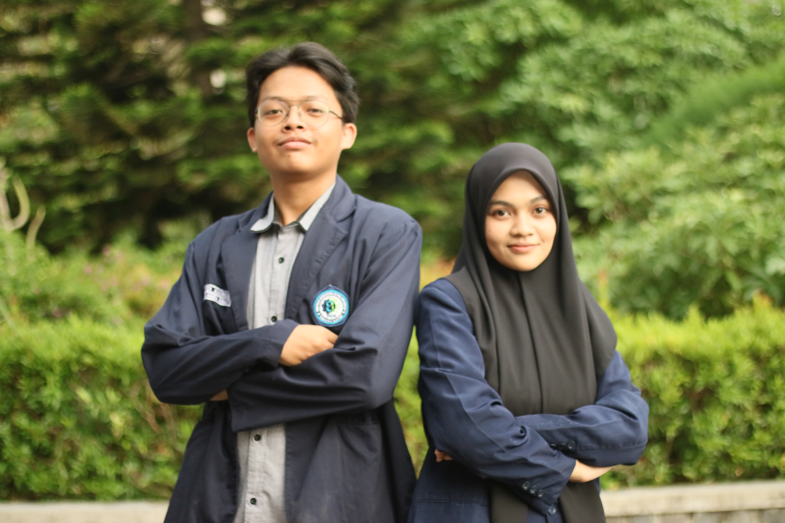

AZIZ HUSAIN
VISUAL COMMUNICATION
DIVISI MEDIA - PORTRAITS

PROJECT CONCEPT
This series captures the dynamic energy and collaboration within the Divisi Media team. The focus was on utilizing **natural light** and **deep contrast** to emphasize the subjects' expressions and create a strong, professional mood.
KEY TECHNIQUES
THE EXECUTION
The shoot was executed over a single afternoon, requiring rapid adaptation to changing lighting conditions. We aimed for authenticity, ensuring the final images reflected the team's genuine character rather than stiff, posed shots.